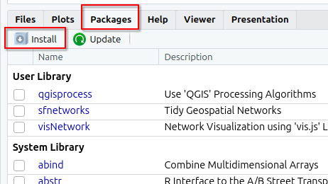
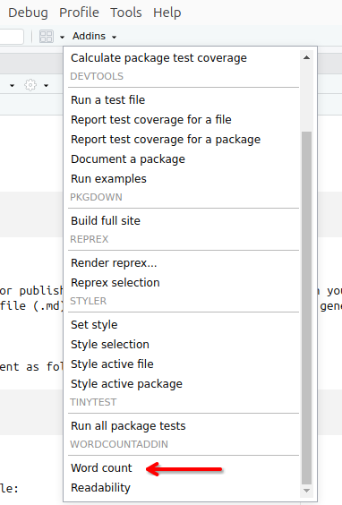

# sudo apt update && sudo apt upgrade -y
sudo apt install r-base2 Software
In this chapter we will guide you through the installation of R, RStudio and the packages you will need for this course.
R and RStudio1 are separate downloads.
2.1 R
R or R stats (how it is also known) is a programming language and free software environment for statistical computing and graphics supported by the R Foundation for Statistical Computing.
The download links live at The Comprehensive R Archive Network (aka CRAN). The most recent version is 4.4.1, but you can use >= 4.1.x if you already have it installed.
Download R-4.4.2 for Windows and run the executable file.
Download R-4.4.2 for MacOX. You will have to choose between the arm64 or the x86-64 version.
Download the .pkg file and install it as usual.
These are instructions for Ubuntu. If you use other linux distribution, please follow the instructions on The Comprehensive R Archive Network - CRAN.
You can look for R in the Ubuntu Software Center or install it via the terminal:
Or, if you prefer, you can install the latest version of R from CRAN:
# update indices
sudo apt update -qq
# install two helper packages we need
sudo apt install --no-install-recommends software-properties-common dirmngr
# add the signing key (by Michael Rutter) for these repos
wget -qO- https://cloud.r-project.org/bin/linux/ubuntu/marutter_pubkey.asc | sudo tee -a /etc/apt/trusted.gpg.d/cran_ubuntu_key.asc
# add the R 4.0 repo from CRAN -- adjust 'focal' to 'groovy' or 'bionic' as needed
sudo add-apt-repository "deb https://cloud.r-project.org/bin/linux/ubuntu $(lsb_release -cs)-cran40/"Then run:
sudo apt install r-base r-base-core r-recommended r-base-dev[Optional] To keep up-to-date r version and packages, you can follow the instructions at r2u
After this installation, you don’t need to open R base. Please proceed to install RStudio.
2.2 RStudio
RStudio Desktop is an integrated development environment (IDE) for R. It includes a console, syntax-highlighting editor that supports direct code execution, as well as tools for plotting, history, debugging and workspace management.
RStudio is available for free download from Posit RStudio.
Download RStudio 2024.09 and run the executable file.
Download RStudio 2024.09 and install it as usual.
These are instructions for Ubuntu 24 / Debian 12. If you use other linux distribution, please follow the instructions on Posit RStudio.
Install it via the terminal:
sudo apt install libssl-dev libclang-dev
wget https://download1.rstudio.org/electron/jammy/amd64/rstudio-2024.09.1-394-amd64.deb
sudo dpkg -i rstudio*
rm -v rstudio*2.3 R packages
You will need to install some packages to work with the data and scripts in this course.
You can install them in RStudio by searching for them in the Packages tab:

or by running the following code in the console:
install.packages("rmarkdown")
install.packages("bookdown")
install.packages("rticles")
install.packages("tidyverse")
install.packages("readxl")
install.packages(c("remotes", "devtools", "usethis"))2.4 rticles
You can install and use rticles from CRAN as follows:
install.packages("rticles")See chapter 3 to setup an rticle template.
2.5 tinytex
To be able to export your Rmakdown document to a pdf file, you will need a LaTeX processor. tinytex is a low weight R package with the most used features of LaTeX that you can use with R.
# you need to run both lines
install.packages("tinytex")
tinytex::install_tinytex()To use some LaTeX packages, you also need to install some tlmgr packages. Here is a list of the most common ones.
tinytex::tlmgr_install(c("algorithmicx", "algorithms", "amscls", "amsfonts", "amsmath", "apacite", "appendix", "atbegshi", "atveryend", "auxhook", "babel", "bibtex", "bigintcalc", "bitset", "booktabs", "cm", "colortbl", "ctablestack", "dehyph", "dvipdfmx", "dvips", "ec", "epstopdf-pkg", "etex", "etexcmds", "etoolbox", "euenc", "everyshi", "fancyvrb", "filehook", "firstaid", "float", "fontspec", "framed", "geometry", "gettitlestring", "glyphlist", "graphics", "graphics-cfg", "graphics-def", "helvetic", "hycolor", "hyperref", "hyph-utf8", "hyphen-base", "iftex", "inconsolata", "infwarerr", "intcalc", "jknapltx", "knuth-lib", "kpathsea", "kvdefinekeys", "kvoptions", "kvsetkeys", "l3backend", "l3kernel", "l3packages", "latex", "latex-amsmath-dev", "latex-bin", "latex-fonts", "latex-tools-dev", "latexconfig", "latexmk", "letltxmacro", "listings", "lm", "lm-math", "ltxcmds", "lua-alt-getopt", "lua-uni-algos", "luahbtex", "lualatex-math", "lualibs", "luaotfload", "luatex", "luatexbase", "makecell", "mdwtools", "metafont", "mfware", "modes", "multirow", "natbib", "ncctools", "pdfescape", "pdflscape", "pdftex", "pdftexcmds", "plain", "psnfss", "refcount", "rerunfilecheck", "rsfs", "scheme-infraonly", "selnolig", "setspace", "siunitx", "stringenc", "sttools", "symbol", "tex", "tex-ini-files", "texlive-scripts", "texlive.infra", "threeparttable", "threeparttablex", "times", "tipa", "tools", "trimspaces", "ulem", "unicode-data", "unicode-math", "uniquecounter", "url", "varwidth", "vruler", "wrapfig", "xcolor", "xetex", "xetexconfig", "xkeyval", "xunicode", "zapfding"))
tinytex::tlmgr_update() # updates all latex pkgs
Note
This may take a bit longer for the first time.
2.6 Word count addin
This R package is an RStudio addin to count words and characters in text in an R markdown document. It also has a function to compute readability statistics so you can get an indication of how easy or difficult your document is to read.
Install with:
devtools::install_github("benmarwick/wordcountaddin",
type = "source", dependencies = TRUE)Close and reopen RStudio so the WordCountAddin should be available under Addins.

2.7 Zotero
Zotero is a free reference and bibliography manager, just like Mendley and others.
You can use Zotero to organize your papers, and to create automatic in-line citations and references.
To download, please visit https://www.zotero.org/download/ and select your operating system.
You may need to register for a free account at https://www.zotero.org/user/register
We will use RStudio, although if you already use other studio such as VScode, that’s also fine.↩︎